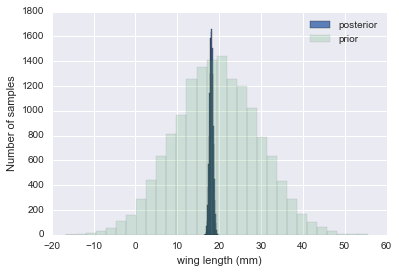

%matplotlib inline
import numpy as np
import matplotlib.pylab as plt
import seaborn as sn
from scipy.stats import normThe Normal Model
Conjugate priors for the workhorse of statistics.
bayesian
probability
statistics
Derives the normal-normal conjugate model for Bayesian inference on the mean of a Gaussian with known variance. Shows how the posterior interpolates between prior belief and data, and how precision (inverse variance) governs the weighting.
A random variable \(Y\) is normally distributed with mean \(\mu\) and variance \(\sigma^2\). Thus its density is given by :
\[ p(y \vert \mu, \sigma^2) = \frac{1}{ \sqrt{ 2 \pi \sigma^2}} e^{-( \frac{y-\mu}{2 \sigma})^2} \]
Suppose our model is \(\{y_1, \ldots, y_n \vert \mu, \sigma^2 \} \sim N(\mu, \sigma^2)\) then the likelihood is
\[ p(y_1, \ldots, y_n \vert \mu, \sigma^2) = \prod_{i=1}^{n} p(y_i \vert \mu, \sigma^2)=\prod_{i=1}^{n} \frac{1}{ \sqrt{ 2 \pi \sigma^2}} e^{-( \frac{(y_i-\mu)^2}{2\sigma^2})} = \frac{1}{ \sqrt{ 2 \pi \sigma^2}} \exp \left\{ - \frac{1}{2} \sum_i \frac{(y_i-\mu)^2}{\sigma^2} \right\} \]
We can now write the posterior for this model thus:
\[ p( \mu, \sigma^2 \vert y_1, \ldots, y_n, \sigma^2) \propto \frac{1}{ \sqrt{ 2 \pi \sigma^2}} e^{ - \frac{1}{2\sigma^2} \sum (y_i - \mu)^2 } \, p(\mu, \sigma^2)\]
Lets see the posterior of \(\mu\) assuming we know \(\sigma^2\).
Normal Model for fixed \(\sigma\)
Now we wish to condition on a known \(\sigma^2\). The prior probability distribution for it can then be written as:
\[p(\sigma^2) = \delta(\sigma^2 -\sigma_0^2)\]
(which does integrate to 1).
Now, keeping in mind that \(p(\mu, \sigma^2) = p(\mu \vert \sigma^2) p(\sigma^2)\) and carrying out the integral over \(\sigma^2\) which because of the delta distribution means that we must just substitute \(\sigma_0^2\) in, we get:
\[ p( \mu \vert y_1, \ldots, y_n, \sigma^2 = \sigma_0^2) \propto p(\mu \vert \sigma^2=\sigma_0^2) \,e^{ - \frac{1}{2\sigma_0^2} \sum (y_i - \mu)^2 }\]
where I have dropped the \(\frac{1}{\sqrt{2\pi\sigma_0^2}}\) factor as there is no stochasticity in it (its fixed).
Say we have the prior
\[ p(\mu \vert \sigma^2) = \exp \left\{ -\frac{1}{2 \tau^2} (\hat{\mu}-\mu)^2 \right\} \]
then it can be shown that the posterior is
\[ p( \mu \vert y_1, \ldots, y_n, \sigma^2) \propto \exp \left\{ -\frac{a}{2} (\mu-b/a)^2 \right\} \] where \[ a = \frac{1}{\tau^2} + \frac{n}{\sigma_0^2} , \;\;\;\;\; b = \frac{\hat{\mu}}{\tau^2} + \frac{\sum y_i}{\sigma_0^2} \] This is a normal density curve with \(1/\sqrt{a}\) playing the role of the standard deviation and \(b/a\) playing the role of the mean. Re-writing this,
\[ p( \mu \vert y_1, \ldots, y_n, \sigma^2) \propto \exp\left\{ -\frac{1}{2} \left( \frac{\mu-b/a}{1/\sqrt(a)}\right)^2 \right\} \]
The conjugate of the normal is the normal itself.
Define $= ^2 / ^2 $ to be the variance of the sample model in units of variance of our prior belief (prior distribution) then the posterior mean is
\[\mu_p = \frac{b}{a} = \frac{ \kappa}{\kappa + n } \hat{\mu} + \frac{n}{\kappa + n} \bar{y} \]
which is a weighted average of prior mean and sampling mean. The variance is
\[ \sigma_p^2 = \frac{1}{1/\tau^2+n/\sigma^2} \] or better
\[ \frac{1}{\sigma_p^2} = \frac{1}{\tau^2} + \frac{n}{\sigma^2}. \]
You can see that as \(n\) increases, the data dominates the prior and the posterior mean approaches the data mean, with the posterior distribution narrowing…
Example of the normal model for fixed \(\sigma\)
We have data on the wing length in millimeters of a nine members of a particular species of moth. We wish to make inferences from those measurements on the population mean \(\mu\). Other studies show the wing length to be around 19 mm. We also know that the length must be positive. We can choose a prior that is normal and most of the density is above zero (\(\mu=19.5,\tau=10\)). This is only a marginally informative prior.
Many bayesians would prefer you choose relatively uninformative (and thus weakly regularizing) priors. This keeps the posterior in-line (it really does help a sampler remain in important regions), but does not add too much information into the problem.
The measurements were: 16.4, 17.0, 17.2, 17.4, 18.2, 18.2, 18.2, 19.9, 20.8 giving \(\bar{y}=18.14\).
Y = [16.4, 17.0, 17.2, 17.4, 18.2, 18.2, 18.2, 19.9, 20.8]
#Data Quantities
sig = np.std(Y) # assume that is the value of KNOWN sigma (in the likelihood)
mu_data = np.mean(Y)
n = len(Y)
print("sigma", sig, "mu", mu_data, "n", n)sigma 1.33092374864 mu 18.1444444444 n 9# Prior mean
mu_prior = 19.5
# prior std
tau = 10 kappa = sig**2 / tau**2
sig_post =np.sqrt(1./( 1./tau**2 + n/sig**2));
# posterior mean
mu_post = kappa / (kappa + n) *mu_prior + n/(kappa+n)* mu_data
print("mu post", mu_post, "sig_post", sig_post)mu post 18.1471071751 sig_post 0.443205311006#samples
N = 15000
theta_prior = np.random.normal(loc=mu_prior, scale=tau, size=N);
theta_post = np.random.normal(loc=mu_post, scale=sig_post, size=N);plt.hist(theta_post, bins=30, alpha=0.9, label="posterior");
plt.hist(theta_prior, bins=30, alpha=0.2, label="prior");
#plt.xlim([10, 30])
plt.xlabel("wing length (mm)")
plt.ylabel("Number of samples")
plt.legend();
In the case that we dont know \(\sigma^2\) or wont estimate it the way we did above, it turns out that a conjugate prior for the precision (inverse variance) is a gamma distribution. Interested folks can see Murphy’s detailed document here. but you can always just use our MH machinery to draw from any vaguely informative prior for the variance ( a gamma for the precision or even for the variance).